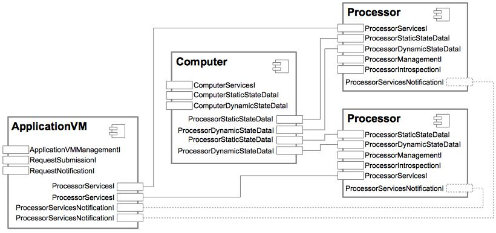

Data center simulator.
| Licence |
|---|
|
Copyright Jacques Malenfant, U. Pierre et Marie Curie. Jacques.Malenfant@lip6.fr This software is a computer program whose purpose is to provide a basic simulator for a data center to experiment with autonomic computing techniques for controlling the QOS (mean service time of requests) of web-like applications. This software is governed by the CeCILL-C license under French law and abiding by the rules of distribution of free software. You can use, modify and/ or redistribute the software under the terms of the CeCILL-C license as circulated by CEA, CNRS and INRIA at the following URL http://www.cecill.info. As a counterpart to the access to the source code and rights to copy, modify and redistribute granted by the license, users are provided only with a limited warranty and the software's author, the holder of the economic rights, and the successive licensors have only limited liability. In this respect, the user's attention is drawn to the risks associated with loading, using, modifying and/or developing or reproducing the software by the user in light of its specific status of free software, that may mean that it is complicated to manipulate, and that also therefore means that it is reserved for developers and experienced professionals having in-depth computer knowledge. Users are therefore encouraged to load and test the software's suitability as regards their requirements in conditions enabling the security of their systems and/or data to be ensured and, more generally, to use and operate it in the same conditions as regards security. The fact that you are presently reading this means that you have had knowledge of the CeCILL-C license and that you accept its terms. |
The package fr.upmc.datacenter provides for a basic data center
simulation written in a component-based fashion using the Basic Component
Model (BCM).
Data center simulator design
The data center provides physical resources, i.e. computers. Each computer has a fixed number of processors, each of which having a fixed number of cores.
Processors are simulated by components described by Processor. A
processor component offers an interface ProcessorServicesI
declaring task execution services, including the submission of a task for
execution and notification of its completion. To do the notifications, the
processor component requires the interface
ProcessorServicesNotificationI.
Cores in a processor can execute at different admissible frequencies that can
be set using the interface ProcessorManagementI offered by the
component. When starting, cores operate at a given default frequency. When
setting a new frequency, it must be admissible and also obey a coherence
constraint for the processor limiting the difference between the frequencies
of its cores to a certain maximum gap.
To help managing them, processor components also offers interfaces to get static and dynamic state data about them, both in pull or push mode.
Computers are simulated are simulated by components described by
Computer. Computer manages the reservation of cores by application
virtual machines. Computer components offer the interface
ComputerServicesI, through which one can request the allocation
of one or more cores among the available ones of the computer processors.
When allocated, a description of the core and all the necessary information
to connect to the processor component holding it are provided to the
requester.
To help managing them, computer components also offers interfaces to get static and dynamic state data about them, both in pull or push mode.
Finally, the data center provides application virtual machines simulated by
ApplicationVM components. An AVM component offers the interface
RequestSubmissionI to receive the request submissions for the
application, and it requires the interface RequestNotificationI
to notify the completion of a request. AVM components use processor cores to
execute the requests. AVM offers the interface
ApplicationVMManagementI exposing a method to allocate it cores
from processors of a single computer.
The next figure shows the deployment of a minimal data center where a computer with two processors provides cores from both of its processors to a single application VM. Components, their ports and their interconnections are given:
